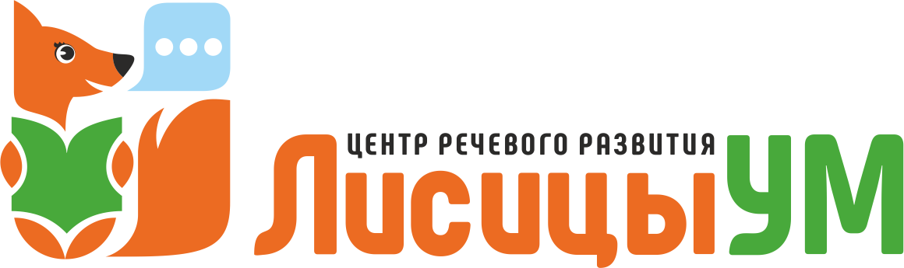

За 45 минут разберём,
почему ребёнка понимают только дома
Спокойная индивидуальная встреча с логопедом. Разберём, почему речь смазанная («каша во рту») и как сделать её понятной не только для своих. Диагностика бесплатна при покупке пакета занятий в день диагностики.
Выберите удобный способ записи:
Проводит педагог с большим успешным опытом работы с невнятной речью · Санкт-Петербург
Подойдёт, если ребёнок…
- Говорит много и фразами, но невнятно – дома понимают, а чужие взрослые и дети переспрашивают
- Тараторит, глотает окончания и слоги, речь смазанная
- Скоро в школу, и вы боитесь, что из-за нечёткой речи будут трудности с письмом и чтением, а его будут дразнить
- Уже занимаетесь – у логопеда, делаете массаж, – а в обычной речи всё та же каша
Если ребёнок ещё почти не говорит – это про запуск речи; если не даётся один-два конкретных звука у в целом понятного ребёнка – это про постановку звуков. На диагностике разберёмся и подскажем, куда идти.
Что смотрим за 45 минут
- Все компоненты речи и главное – разборчивость в живой речи, а не только отдельные звуки
- Тонус и подвижность языка, губ и мимических мышц
- Речевое дыхание и темп речи (тараторит, глотает окончания)
- Отличаем застревание на слогах от заикания
Главное отличие нашей работы. Частая история: у логопеда в кабинете звук чистый («кабинетная речь»), а дома снова каша. Мы работаем над разборчивостью живой речи – тонус, темп, дыхание, автоматизация, – а не только над отдельным звуком.
Честно про логомассаж и сроки
Логомассаж, если он нужен, становится частью обычного занятия (примерно 15 минут из 45), бережно и в игре, по самочувствию ребёнка. Это не отдельный дорогой курс и не больно.
Мы не обещаем результат «за N занятий» и не даём прогноз сроков – на диагностике честно покажем, что западает и что реально подтянуть.
Не воюем с неврологом: при необходимости порекомендуем дойти до него. Таблетки подготовят почву, а говорить научим на занятиях.
Кто проводит и когда диагностика бесплатна
Проводит педагог с большим успешным опытом работы именно с невнятной речью – логопед/дефектолог, который свободно работает с логомассажем.
Когда бесплатно. Диагностика бесплатна, если пакет занятий оформлен в тот же день. Мы ничего не навязываем: по итогам вы получите понятную картину и рекомендации, а заниматься у нас или нет – решаете только вы.
Без волнения и оценок. Знакомство идёт параллельно с обследованием, в игре, – так даже стеснительному ребёнку не страшно.
Если понадобятся занятия – логопед, дефектолог, нейропсихолог и логомассаж доступны по одному абонементу в одном центре, не нужно искать специалистов по всему городу.
Как проходит
- 1 Записываетесь в удобном мессенджере и выбираете время.
- 2 Приходите с ребёнком в наш центр в Санкт-Петербурге – пр. Стачек, 99, ТРК «Континент».
- 3 Пока вы заполняете анамнез, логопед уже занимается с ребёнком – знакомство и обследование идут параллельно, в спокойной игровой форме.
- 4 Получаете устные рекомендации сразу и письменное логопедическое заключение в мессенджер – в день встречи или на следующий.
Запишитесь сейчас
Запись занимает минуту. Диагностика индивидуальная, бесплатна при покупке пакета занятий в день диагностики. Заниматься у нас или нет – решаете вы.
Без обязательств · решение принимаете вы